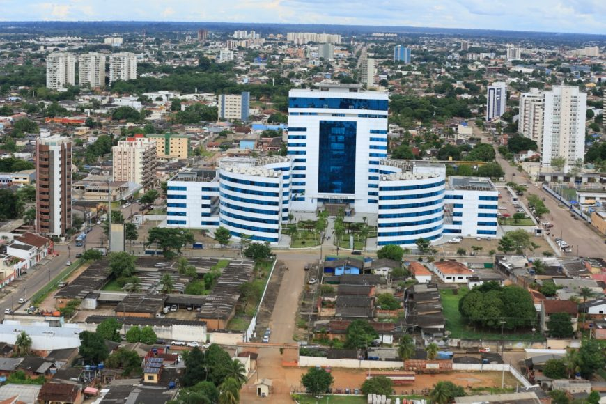

Rondônia é um estado localizado na Região Norte do Brasil, com uma grande diversidade natural e cultural. Sua capital, Porto Velho, é o principal centro urbano e econômico do estado. Rondônia se destaca pela sua produção agrícola, especialmente soja, café e milho, além de ser um importante polo na pecuária. O estado também possui uma rica biodiversidade, com áreas protegidas de floresta tropical, como o Parque Nacional de Pacaás Novos. A economia de Rondônia tem forte relação com a exploração de recursos naturais, mas também está em crescimento nos setores de energia e turismo. A história de Rondônia está ligada à ocupação da Amazônia e ao ciclo da borracha, e sua população é marcada por uma mistura de culturas indígenas, nordestinas e de imigrantes de outras partes do Brasil.
